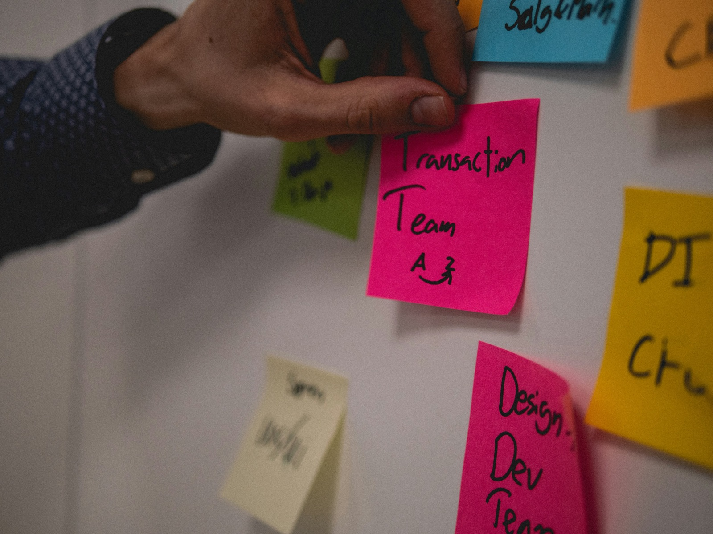

Leading when so much is uncertain.
You give direction even when not everything can be planned. You learn to live with uncertainty, look closely and take the next step without waiting for every answer.
Support for university leaders, leadership teams and managers in times of uncertainty.
<mark> (round 2, S3).<ul>
<li>Your university … there is <mark>no shared strategy</mark> that …</li>
<li>…</li>
</ul>I support you in clarifying your role in relation to your team, your organisation and its wider environment, and in leading in a way that makes change work.
Do you have leadership responsibility at a university, or do you want to strengthen your university’s leaders? Perhaps one of these questions is on your mind:
subgrid-3 (shape · H3 · text), so all texts start at the same height (round 2, S5).Parent container › Layout: Grid › 3 or 4 columns
Each card container › Layout: Grid › CSS Classes: subgrid-3SVG · gain card shapes (set rounded diamond colour #67888B in the widget)
<svg xmlns="http://www.w3.org/2000/svg" viewBox="0 0 24 24" width="24" height="24"><rect width="24" height="24" fill="#02383E"/></svg>
<svg xmlns="http://www.w3.org/2000/svg" viewBox="0 0 24 24" width="24" height="24"><path d="M12 0 24 12 12 24 0 12Z" fill="#3DB7BB"/></svg>
<svg xmlns="http://www.w3.org/2000/svg" viewBox="0 0 24 24" width="24" height="24"><rect x="4.5" y="4.5" width="15" height="15" rx="3" transform="rotate(45 12 12)" fill="#3DB7BB"/></svg>
<svg xmlns="http://www.w3.org/2000/svg" viewBox="0 0 24 24" width="24" height="24"><circle cx="12" cy="12" r="12" fill="#008080"/></svg>
You give direction even when not everything can be planned. You learn to live with uncertainty, look closely and take the next step without waiting for every answer.
You stay calm and focused, even under pressure. You make decisions based on inner clarity and a good understanding of your institution, rather than simply reacting.
Your leadership team finds a shared direction, clarifies roles and learns to handle tensions constructively. Trust grows from this, and everyone stands behind the decisions.
Your leaders actively help shape change. New forms of collaboration become tangible in day-to-day work in the university, in leadership as well as in faculties and administration.
As Director Europe and Open Knowledge at the UOC, I led the creation of the European Universities alliance OpenEU. In this role, I sat on the Research and Knowledge Transfer Committee and, as a representative of administrative staff, on the senate. At the ACUP, I chaired committees with vice-rectors from the Catalan universities. I know the responsibility and visibility that leadership positions at universities bring, and how much depends on the way a leadership team works together. I bring this experience into my work and adapt it to your situation.
I’m a certified organisational developer and systemic coach. I work systemically and with awareness-based methods, drawing on Theory U and Frédéric Laloux’s Reinventing Organizations, among others. This lets us connect work on your own leadership with work on structures and collaboration. More on my methods.
Every conversation and every workshop ends with something you can apply directly in your daily work.
I work in English, German, Spanish, Italian and Catalan, and I move confidently between academic cultures.
In coaching, we work on exactly the topic you bring: a decision that needs clarity now, or a change that needs time. You book individual sessions of 45 or 60 minutes as often as you need them, or a coaching programme over three to six months with sessions every two to four weeks. The programme also includes an asynchronous channel for urgent matters between sessions, with a reply within 48 hours. I work according to the principles of systemic coaching and make sure you leave with concrete insights for your practice.
Prices
I work with rectorates, presidencies, dean’s teams and other leadership teams that want to work together more closely. Together, we find a shared direction, clarify roles and responsibilities and address tensions openly. This might be a retreat, a series of workshops or support over several months. I always look at the team in relation to the university it works in.
My training on selected leadership topics builds the skills and tools you need to lead change. It can be tailored to your university and your team, or offered as an open course. Topics include:
There is plenty of room for practice and reflection, close to real situations from your work.
Together with your staff development team, I design programmes that develop leaders at your university in a targeted way, for example in middle management, in the faculties or in administration. The programmes combine training, peer reflection and coaching and are aligned with your university’s strategy. Participants work on real questions from their work, for example in Case Clinics, a peer consultation format. This strengthens individuals and, at the same time, the leadership culture of your university.
For women in roles such as rector, president, chief operating officer or dean, and in other leadership positions, I offer a dedicated programme with coaching, support for the first 100 days and a peer community.
Whether you want to clarify your own role, strengthen a leadership team or develop a programme for your university’s leaders: in a free introductory call, we explore what you need and what kind of support makes sense.
Let’s talksubgrid-2 (line above names aligned).case-card__logo--photo) · Post Title H3 · Excerpt · Button "Read the full case study".Quotes container › Layout: Grid › columns: repeat(auto-fit, minmax(300px, 1fr))
Each quote container › Layout: Grid › CSS Classes: subgrid-2
A European climate foundation evolved its vision, culture and decision-making in a “Fit for Future” process. As a senior consultant at joyn-coop, I developed a programme to help its leaders put the new mission statement into practice. It included training and coaching on competence-based decision-making, leadership roles and self-reflection.
When conditions change quickly, planning and control alone are no longer enough. What’s needed is leadership that gives direction without having all the answers. That includes looking closely, bringing in different perspectives and trying out new things in small steps rather than waiting for the perfect solution. At universities, it also means combining the culture of committees with more agility. It starts with the leader. If you can live with uncertainty and still act, you give others something to hold on to.
Traditional executive coaching usually comes from the corporate world. It assumes clear hierarchies, fixed targets and fast decision-making. Universities work differently: decisions are made in collegial bodies, academic staff and administration have different cultures, leadership positions are often held for a fixed term, and many leaders are responsible for people over whom they have little formal authority. I know these conditions from my own work at universities and in university networks. So you don’t have to explain your context to me first, and we can work on what matters to you straight away.
Awareness-based leadership starts from the idea that the quality of leadership depends on the quality of our attention: how we perceive, listen and connect with ourselves and others before we act. The approach comes from the work of the Presencing Institute around Otto Scharmer’s Theory U. For universities, this means change happens not only through new strategies and structures, but just as much through how people talk to each other, listen to one another and recognise together what is needed. In my formats, I combine this way of leading with practical tools for your work.
It starts with a conversation with the person leading the team and, if possible, individual conversations with the team members. This shows where the team stands and what it needs. Building on this, we design retreats or workshops in which the team works on its shared direction, its roles and its collaboration. If you like, I can combine work with the team with individual coaching.
Yes. What is discussed in coaching stays between you and me. At the start, I agree the framework and goals of the coaching with the university as the client. I don’t pass on anything from the sessions without your consent.
Every collaboration looks different, from a single coaching session to a leadership programme over several months. In a free introductory call, we explore what you need. I then send you a proposal with a timeline and cost estimate. You can also book individual coaching sessions directly as a private client.
Last updated: